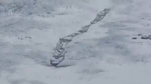

Out in the wilds of the far northern country of Iceland lies a frigid glacial lake called Lagarfljót, which is the nation’s 3rd largest lake and surrounded by picturesque scenery and infused by tales of something strange lurking under the waves. One creature that has long been a part of local folklore here is a creature commonly called the Lagarfljótsormur, or more commonly simply the Lagarfljót worm. The creature in question is most often described as being a writhing, serpentine, worm-like beast said to typically measure from 40 feet long all the way up to around a truly massive 200 feet long, and has been seen in these waters since at least the 14th century, often appearing to have many humps as it swims along in the icy, murky depths. It is a creature that has gone on to be by far the most famous lake monster of Iceland, and also one of the most bizarre.
Inhabitants of the area have long spoken of menacing worm-like creatures prowling the depths of the lake, which would supposedly often even come up onto shore to coil up and await prey, including livestock, pets, and even humans, and the appearance of the worm was often seen to be a portent of disaster. The folkloric version of the origins of the beast was published in a collection of Icelandic folktales and legends published as the book Icelandic Folk and Fairy Tale, in which the origins are described thus:
At one time, long, long ago, there was a woman living on a farm in the Lagarfljót district, close by the stream where it broadens into a lake. She had a grown daughter. Once, she gave her daughter a gold ring. The woman instructed her daughter to catch a snake and keep the gold ring underneath it in her linen chest (as, apparently, one did long ago in rural Iceland). She did so, but when the girl went to look at her ring again, the snake had grown so large that the chest was beginning to come apart. Then the girl was frightened and she picked up the chest with everything in it and threw it into the lake. A long time passed, and gradually people became aware that there was a serpent in the lake, for it was beginning to kill both people and animals crossing the waters.
Two Finnish men would supposedly come in to vanquish the ever-growing monstrosity, after which they supposedly tied it to some rocks down at the bottom of the lake and left it there to die. Regardless of whether this spectacular myth has any truth to it or not, there certainly is a long history of people seeing something very unusual in the lake. In the 16th and 17th centuries many explorers reported seeing something very large and serpentine in the lake, and the creature appeared in several maps of the time, with one cartographer named Abraham Ortelius marking out this lake as a place of monsters and stating:
In this lake appears a large serpent, which are a menace to the inhabitants and appear when some memorable event is imminent.
Many of these early reports are obviously colored with a bit of folklore and legend, such as the colossal beast raising its body so high out of the water that a ship could pass under it, or that it could thrash about with enough potency to cause earthquakes, but there were plenty of other sightings that seem to be less mythic in nature. In 1863 there was a sighting of the monster relayed by a British priest and explorer by the name of Sabine Baring-Gould, who told of some farmers witnessing a 46-foot-long serpentine creature surface in the lake, which apparently had a head like a seal and several visible humps.
Such strange sightings are not purely the realm of the murky depths of lost history either, and there are other encounters with the alleged creature that are more recent. In 1963, a Sigurður Blöndal, who was the very head of the Icelandic National Forest Service, saw the mysterious creature, and it was seen again in 1967 swimming up the lake by employees at the Hallormsstaður forestry station. In 1983 it was encountered by some construction workers laying telephone cable, who reported something very large in the water near the eastern shore while carrying out depth measurements. Curious, the workers pulled up the cable and found that it had been damaged by something down there, saying:
This cable that was specially engineered so it wouldn’t kink was wound in several places and badly torn and damaged in 22 different places . I believe we dragged the cable directly over the belly of the beast. Unless it was through its mouth.
In 1998 a teacher and a group of students from Hallormsstaðir School also claimed to have seen the monstrous serpent winding through the water of the lake. Perhaps most famously of all there was alleged video footage of the monster taken in February of 2012. The footage in question was shot by a farmer named Hjörtur E. Kjerúlf, and shows what appears to be a large, worm-like beast moving in a serpentine fashion through the snow and ice covered water of a river feeding into the lake. At the time the impressive looking, very clear video took the Internet by storm, and was widely debated and picked apart. Interest was so strong that TV crews and researchers from as far away as Japan made their way to Iceland in order to follow-up on the story. Indeed, it was so convincing that the Fljotsdalsherao municipal council in Iceland determined the footage to be authentic and the creature officially real based on a vote by a 13-person “truth commission,” which was later backed up by an expert panel.
You can’t argue with that, can you? Well, actually, you can. It was later discovered through intense video analysis that, although the subject appears to be moving through the water, it in fact is remaining stationary, with the rapid current merely giving the illusion that it is swimming. This means that the “monster” in the video is likely just a thick rope or fishing net snagged up on some rocks and waving about in the current in an anomalous looking way. Despite this debunking evidence, the municipal has stood by its verdict, making the Lagarfljótsormur officially “real,” which has been met with criticism denouncing it as just a publicity stunt to bring in tourists. There are also plenty of people who disagree with the skeptical analysis of the video and still defend it as authentic. You can see the footage here and judge for yourself.
So is there some sort of giant worm or serpent living in the depths of this far northern lake? That depends a lot on who you ask. For skeptics this is merely the result of legends intertwined with mis-identifications of debris, flotsam, or clumps of ice or foam in the water in the water and optical illusions. For others the stories and the reports of this creature point to something unknown and undiscovered lurking in the lake, although what that could be no one knows. For now this cold, northern lake keeps its secrets close, and strange denizens perhaps snake through the murky depths beyond our understanding.